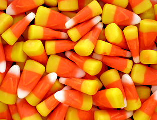
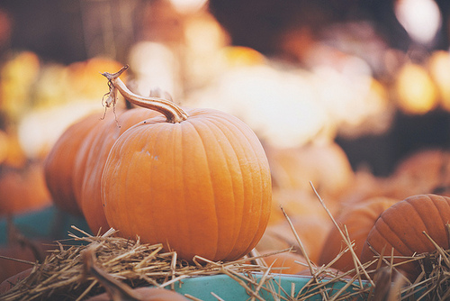
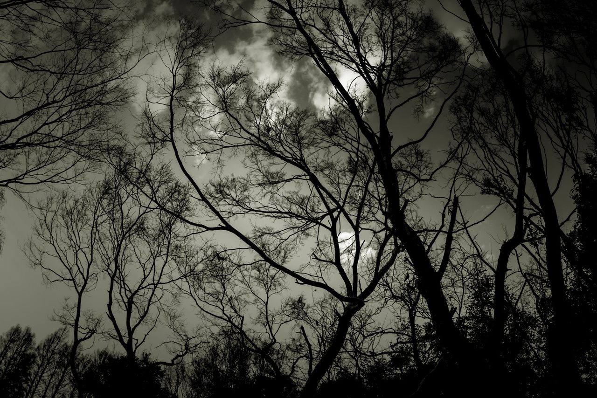

Candy corn is popular primarily around Halloween. The three colors of the candy include: a yellow end, an orange center, and a pointed white tip. They mimic the appearance of kernels of corn, hence the name.

A pumpkin is similar to a squash plant. It is round, with smooth, slightly ribbed skin, and had a deep yellow to orange color. The thick shell contains the seeds and pulp.

Trees that have a shadow or shape like shown above are usually present around Halloween because of the cold weather. The fact that the trees don't have leaves makes them even scarier when in the dark.